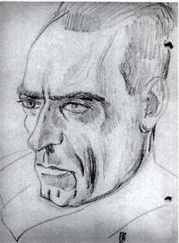

> nieuwsbrief > 2014 - nr 1
Inhoud
Hernieuwen
ledenbijdrage voor 2014
2014 wordt voor het Studiecentrum Joris van Severen
een jaar vol uitdagingen. Naast en ter gelegenheid van - het
geplande Colloquium Joris van Severen verschijnt
dan ook de langverwachte prestigieuze fotobiografie over Joris
van Severen en
zijn beweging. Dit jaarboek buiten
reeks zal ingebonden op albumformaat verschijnen en 248
paginas tellen met tal van niet eerder gepubliceerde fotos.
Ook zal de uitgave een lijst van de voorintekenaars bevatten.
Dit noopt ons uiteraard tot een eenmalige aanpassing
van de ledenbijdrage voor 2014. Deze bedraagt 45 (exclusief
verzendkosten). Voor wie nu al voorziet niet te kunnen aanwezig
zijn op het colloquium zie verder (en de uitgave dus via de
post wenst te ontvangen) beloopt de bijdrage 55
verzendkosten inclusief.
Een folder licht de geplande uitgave op een waardige
wijze toe. Deze folder bezorgen wij u graag op uw verzoek via
ons e-postadres: maurits.cailliau@skynet.be. Graag gewenst
aantal opgeven.
In de ledenbijdrage blijft uiteraard het abonnement op
onze gedrukte driemaandelijkse Nieuwsbrief Joris van
Severen in zijn vernieuwde vormgeving - begrepen.
Voor tal van lezers vormt deze Nieuwsbrief wellicht
een eerste kennismaking zijn met het Studiecentrum Joris van
Severen en zijn werking. We verhopen, mede met het oog op onze
verdere plannen voor dit jaar met name het colloquium en de
fotobiografie - hun belangstelling te kunnen opwekken.
De gedrukte versie van deze Nieuwsbrief valt zowat
tussen Kerst en de jaarwisseling in de brievenbus. Reden om
meteen ook onze lezers een gelukkig en vruchtbaar jaareinde e
een goed begin toe te wensen.
Nieuwsbrief Joris van
Severen in een nieuw kleedje
De
aankleding van de gedrukte versie van deze Nieuwsbrief
wijkt met zijn meerkleuren-kaft - grondig af van wat u
totnogtoe onder ogen kreeg. Dit komt omdat het stilaan tijd werd
om nog eens uit te pakken met een stijlvol visitekaartje, in
de hoop daarmee een nieuw ledenpotentieel te kunnen aanboren.
Ook
de inhoud is daar voornamelijk op afgestemd en biedt enerzijds
inzicht op de bedoelingen van het Studiecentrum Joris van
Severen en zijn activiteiten.
Colloquium Joris van Severen
Noteer
nu al de datum van zaterdag
25 oktober 2014 met een stip in uw agenda. Dan gaat immers
andermaal een Colloquium
Joris van Severen
door. Plaats van het gebeuren is het Goed ter Mote binnen
het nieuwe provinciale domein De Baliekouter in Van Severens geboorteplaats
Wakken.
Als
referaathouders komen drs. Luk Pauwels en drs. Tom Cobbaert aan
het woord. Eerstgenoemde is de auteur van De ideologische evolutie
van Joris van Severen (dat als 3e Jaarboek Joris van Severen
gepubliceerd werd). De tweede referaathouder, werkzaam
binnen het ADVN, promoveerde op het proefschrift De Europese gedachte bij
de Nieuwe Orde in Vlaanderen.
Samen
zullen zij speuren naar de plaats van Joris van Severen binnen
het bredere Europese perspectief van de tussenoorlogse jaren.
Aansluitend
op het colloquium zal het 18e Jaarboek Joris van
Severen zijnde
de fotobiografie
waarvan hierboven uitgebreid sprake - voorgesteld worden en is
er gelegenheid kennis te maken met het vernieuwde museum Van
Hugo Verriest tot Joris van Severen dat binnen het educatief
centrum van de Baliekouter een nieuw en waardig onderkomen vond.
Juul Declercq
De
biografische schets van Juul Declercq, in onze vorige Nieuwsbrief ontleend
aan de vermelde webpaginas - trok enige aandacht. Nergens werd
daarin evenwel Declercqs geboorte en overlijdensplaats vermeld,
namelijk zijn levenslange thuishaven Izegem.
Joris van Severen na vijftig jaar
Luc Delafrotrie
Deze
maand, op 20 mei, was het (in 1990 nvdr) vijftig jaar geleden
dat Joris van Severen door dronken en in paniek verkerende
Franse soldaten in Abbeville werd neergeschoten. Deze verjaardag
kunnen we niet stilzwijgend laten voorbij gaan.

Joris van Severen, door Frits van den
Berghe (1886-1939)
Hoewel
Van Severen loyaal was ten opzichte van de Belgische staat en
met overtuiging koning Leopold III steunde en hoewel hij zijn
gemobiliseerde volge-lingen opriep om de besten te zijn onder
de helm, werd hij op 10 mei 40, bij de inval van de Duitsers,
gearresteerd, in de gevangenis opgesloten en aan Franse
overheden uitgeleverd.
Stippen
we hierbij aan dat een Staat, die zichzelf respecteert, zijn
onderdanen niet aan een vreemde macht uitlevert.
Ondanks
deze onbetwistbare feiten, heeft geen enkele Belgische regering
haar spijt uitgedrukt en zeker geen eerherstel verleend aan deze
onschuldige ven verdienstelijke man.
Geen
enkele eerste minister, ook al had hij sympathie voor de
gedachten en de persoon van Joris van Severen, heeft zijn
arrestatie betreurd en erkend dat hier onrecht was geschied.
Alleen een Waalse minister, Leburton, verklaarde destijds in de
Kamer dat die arrestatie een vergissing is geweest. Koning
Leopold III uitte tegenover zijn medewerker, generaal Van
Overstraeten, zijn ontsteltenis bij het vernemen van de
arrestatie en de gewelddadige dood van Joris van Severen. Maar
ook hij heeft nooit in het openbaar een blijk van waardering
voor Joris van Severen gegeven.
Toen
in 1982 in Wakken, aan zijn geboortehuis een gedenkplaat werd
aangebracht, werd koning Boudewijn door de inrichters van de
plechtigheid verzocht een vertegenwoordiger te sturen. De koning
meende dat hij daar niet kon op ingaan. Het is bijgevolg
duidelijk: het officiële België is niet bereid de misstap
tegenover Van Severen en zijn verdiensten te erkennen.
Wat
wilde die man? Hij was geen oproerkraaier, integendeel hij
predikte de orde. Zijn beweging bleef strikt in het raam van de
wet. Hij wilde het land niet uiteenrukken. Hij wou het welvarend
maken door een verbond te smeden tussen de drie staten van de
Nederlanden: België, Nederland en Luxemburg. Hij werd zodoende
een voorloper en een wegwijzer voor Benelux, waaraan deze landen
voor een goed deel hun welvaart danken. Bovendien streefde hij
naar een sociale orde, naar een samenwerking tussen alle lagen
van de bevolking, van alle beroepen en bedrijven en drukte dat
streven uit met de term solidarisme. Sindsdien is er inderdaad
een ruimere samenwerking zoals tussen de werkgevers en
werknemers en een organisatie van beroepen (die voordien niet
bestond) tot stand gekomen. Hij wilde eveneens een
volksvertegenwoordiging steunend op de georganiseerde natie
waarin het toenmalige parlementaire stelsel te kort schoot.
Hij
wilde geen dictatoriaal stelsel. Op dit ogenblik is het woord
solidarisme algemeen bekend door de gebeurtenissen in Polen
Solidarnosc - en de ineenstorting van het communistisch stelsel
in de Oostbloklanden. Het dient hierbij te worden onderstreept
dat het failliete communistische systeem door de solidaristische
opvattingen werd vervangen. Van Severen noemde het door hem
nagestreefde sociale systeem een synthese van de pauselijke
encyclieken en van een van het marxisme bevrijd socialisme. Wie
zal ontkennen dat West-Europa en nu ook Oost-Europa in dat teken
staan?
Van
Severen was bovendien een hoogstaand mens. Hij bezat een edele
opvatting van het leven, wat in deze tijd wel welkom is. Zeker
zijn er aan zijn uitdrukkingen en aan zijn beweging zaken die
weliswaar vóór de oorlog begrijpelijk waren maar die nu niet
meer van pas komen en misverstand kunnen zaaien. Maar als we hem
daarvan los zien, treedt de waarde van zijn opvattingen en van
zijn leven op het voorplan.
En dan
wordt het duidelijk dat alle redenen aanwezig zijn om hem te
waarderen en hem de eer te geven die hem toekomt.
________________
Bron: De Standaard, mei 1990, met dezelfde illustratie vandaag de dag
amper nog voorstelbaar in die krant.
Bezinning bij de herdenking van Louis Gueuning op 9 november 2013
Jean-Pierre Destrebecq
IJdele
toespraken zonder inhoud en hol geklets
De plaats hier leent er
zich niet toe en nodigt eerder uit tot stilte, inkeer,
ontvankelijkheid. Trouwens de wind van dit seizoen verwaait alle
worden
Wat
blijft er over van Louis Gueuning? Maken wij ons geen illusies,
het menselijk geheugen is korter dan ooit
Denken
aan Louis Gueuning en wij zijn hier nog met enkelen om het te
doen voor zijn graf denken aan hem kan maar tot één woord
leiden: trouw!
Trouw
aan zichzelf, zijn wat men is, trouw aan de roeping die de zijne
is, trouw aan zijn wortels, trouw aan de grond die ons zag
geboren worden, trouw tegenover al diegenen die ons voorafgegaan
zijn en die ons de weg hebben getoond.
Zoals
al diegenen toen twintig jaar waren, zo lang geleden, zie ik elk
jaar rond deze tijd de gemengde herinneringen weer opduiken.
Schaduwen vergezellen ons: verbrijzelde hoop, vergeten
kameraden, onvervulde verbintenissen, het lijden van het ouder
worden
Maar
de lokroep van het leven blijft, vreemd aan de lafheid en de
wreedheid van dat mens De Schoonheid is broos een mysterieus.
Kinderen lopen in de straat, stoeien in de tuin. Alles ligt nog
voor hen open.
Wat
zal er van resten? Alles werd ons gegeven. Wat zal blijven?
Misschien enkel de behoefte van de beschouwing.
Dat uw
wil geschiede, Heer.
Heb
medelijden met dit arme volk! Heb medelijden met ons!
Schromelijke en ergerlijke vergetelheid
Hendrik Carette
In de
Standaard der
Letteren (nr. 3207 van 8
november jl.) onder het thema 1914-1918 De Grote Herdenking
maakten de redacteurs onderaan ook een WOI-bibliotheek met
boeken van diverse bekende ooggetuigen die toentertijd een
oorlogsdagboek bijhielden. De lijst is een lange opsomming en
samenvatting die verwijst naar dagboeken van de Vlaamse nicht
van Cyriel Buysse; Virginie Loveling, de Engelsman Robert Graves
de schrijver van het verfilmde boek I, Claudius, de
beroemde Duitser Ernst Jünger die twee wereldoorlogen als
officier aan Duitse zijde aan den lijve meemaakte en de al even
bekende Franse fascist en antisemiet Louis-Ferdinand Céline met
zijn Reis naar het einde
van de nacht dat natuurlijk geen dagboek is maar een
gruwelijke roman die grotendeels werd geïnspireerd door de
bloedige zinloze slachtingen van deze Europese burgeroorlog die
later gevolgd werd door een tweede Europese burgeroorlog. So far so good; om het
voor een keer in de taal van de Amerikaanse en Britse
overwinnaars te stellen. Maar wie en wat zijn onze vlijtige
redacteurs van deze Standaard
der Letteren vergeten? De koppige schrijvende Vlaamse
herenboer Stijn Streuvels? Neen. De Canadees John McCrae van wie
het beroemde ontroerende gedicht In Flanders Fields in het Nederlands werd
vertaald door Herwig Verleyen? Neen, al deze getuigen werden
terecht niet vergeten. Wie en wat werd dan wel vergeten en meer
dan vermoedelijk weggemoffeld, veronachtzaamd, gecensureerd,
gewist, gewoon vergeten of onder het tapijt ge-schoven, onder de
blinkende tegels van de valse deftigheid, onder het vernis van
onze beschaving? Ik zal het u dadelijk en onom-wonden zeggen en
schrijven en benadrukken: het boek Die vervloekte oorlog /
Dagboek 1914-1918 van Joris van Severen,
uitgegeven en ingeleid door Daniël Vanacker (Kapellen/Ieper:
Uitgeverij Pelckmans i.s.m. het Studiecentrum Joris van Severen,
2005, ISBN 90-289-3586-X). En dit boek kon en mocht hier
uiteraard in de zo deftige en helaas zo voorspelbare Standaard der Letteren
helemaal niet ontbreken. Eén citaat gedateerd op 24 juli 1916
(p. 96) moet hier volstaan om onze lezers aan te sporen te lezen
wat de toen nog jonge luitenant en adjudant Van Severen
noteerde: Als een sterke vuurdrank brandde door mij mijn smart,
felschrijnend, en ik ben de dood nog eens gaan begeren, want
waarom nog leven midden die lelijkheid? Ik zou kunstwerken
scheppen, ja, en dan altijd onvoldaan, altijd onvoldaan zijn,
nooit genoeg liefde, nooit genoeg leven. Het wordt tijd dat
onze onwetende jeugd en trouwens alle onwetenden dit dagboek
lezen en herlezen. Ook en vooral op een serene herdenkingsdag
als 11 no-vember.
Hugo Delanghe (9 januari 1932 - 27 februari 2013) is Jong-Dinaso
geweest. De Delanghes stamden uit een Activistisch geslacht dat
in de jaren van het interbellum zijn weg vond naar het
Verdinaso. We maakten ooit kennis met Hugo naar aanleiding van
een zomer-universiteit van het maandblad TeKoS in
de Provence. Daaruit en uit zijn lidmaatschap van het
Studiecentrum Joris van Severen, blijkt zijn onafgebroken
intellectuele belangstelling voor het gedachten-goed van
destijds.
Als
dorpsgenoot van Joris van Severen was Luc
Verbeke (Wakken 24 februari 1924 Waregem 30
september 2013) zijn leven lang ge-boeid door de persoonlijkheid
van de Verdinaso-leider. Daarvoor ge-tuigde hij regelmatig op
zijn internetblog en ook door zijn lid-maatschap van ons
Studiecentrum. Vanzelfsprekend zullen we ons Luc vooral
herinneren als de medestichter (met André Demedts) van het zo
verdienstelijke Komitee voor Frans-Vlaanderen, waarvan hij
decennialang de bezieler was. Ondanks zijn lichamelijke
beperking was hij recent nog aanwezig bij de heropening van het
Museum Hugo Verriest Joris van Severen, in zijn geboortedorp.
Luc was ook een tedere dichter en Ridder in de Orde van
Oranje-Nassau.
Een vraaggesprek met de leider Joris van
Severen
-
Ik zegde u
reeds dat Dinaso moet worden de algehele en definitieve
liquidatie van het hachelijkste moment dat wij in onze
geschiedenis hebben beleefd, namelijk het flamingantisme. Voor
diegenen die meenden de ogen te moeten openspalken van
verwondering omdat ik het juist ben die zoiets zeg, voeg ik er
nog bij: inderdaad, het flamingantisme heeft bij de Vlamingen
ongeveer niets anders gekweekt dan een mentaliteit van
rouspeterende en totaal machteloze knechten.
-
Staat u mij
toe, Mijnheer Van Severen, ik heb, bij Multatuli geloof ik,
eens gelezen dat de jeugd zich moet oefenen in het bepalen. In
dit verband schijnt gij echter zeer brutaal te werk te gaan.
-
Uw
vergelijking gaat mank, Mijnheer Vidi, in die zin dat ik niet
meer tot de jeugd behoor maar tot de rijpe leeftijd. En van een
andere kant moet ik u zeggen: de Dietsers steunen reeds lang
genoeg op geleende en gebroken stokken.
-
Nog een
opmerking. Wij spraken met vader Anseele [destijds leider van
de Belgische Werkliedenpartij, n.v.d.r.]. Die meende toch dat
de Vlaamse beweging vooruitgang maakt.
-
Vooruitgang?
Anseele is met weinig tevreden. Laat ons de geschiedenis van de
manifestaties nemen. De Vlamingen wilden te Brussel op straat
komen. Ieder weet dat zulke stoeten juist veiligheidskleppen
zijn tegen de opstand. En toch verbiedt Max [de Brusselse
burgemeester, n.v.d.r.] het. Wat gebeurt er dan? Moties. Stoeten
en moties. Moties en stoeten. En dat gebeurt al meer dan honderd
jaar lang. En dat zal duren en blijven duren zo lang de Dietsers
niet beschikken over de nodige middelen.
-
En die
middelen zijn?
-
De macht
veroveren.
-
Hoe?
-
Door het
vormen van een nieuwe organisatie, waar een strenge tucht
heerst. In die organisatie worden bewuste krachten gevormd. Deze
zijn de kernen van de leidende ploegen, die mor-gen de leiding
in de twee staten [België en Nederland, n.v.d.r.] zullen nemen.
-
Hoe wilt gij
die macht veroveren?
-
Wij sturen
niet aan op revolutie. Wij vormen alleen de pre-figuratieve
staat van morgen. Wij streven naar kwaliteit. Wij negeren de
demagogie. Wij kennen de theorie van Ibsen over rashonden en
straathonden. In Vlaanderen groeit onze kern met de dag. Onze
documentatie bewijst dat wij een groep zijn die ernstig
opgenomen wordt. Ook in Rijks-Nederland tellen wij zeshonderd
doelbewuste leden die onder een schitterende leiding staan. Dit
alles onder mijn opperste leiding. Er is geen tegenspraak. Onze
administratie is een model zo perfect als bij een Rijksbank.
-
-
Wij
ontmoeten veel sympathie in alle lagen, maar ook bij de leidende
personaliteiten van de Belgische politiek. Er zijn er, van de
meest vooraanstaande, die letterlijk hebben gezegd: Il ny a
pas dautre plan que le plan Van Severen. Deze personaliteiten
zullen op tijd en stond tevoorschijn treden. Als het zo ver komt
zullen wij hen stellen op de plaats waar zij behoren te staan.
-
Men zegt wel
eens dat gij een beweging zijt die door Vlaamse onderpastoors
wordt aangevuurd.
-
Bij ons kan
een priester geen lid worden. Noch priester, noch dominee.
-
Men staat
verbaasd over uw meningsverschillen met de andere
Vlaams-nationalistische groepen. Zo bijvoorbeeld inzonderheid
de nieuwe marsrichting. Wat is dat?
-
Wij staan
op het standpunt dat, vanwege de internationale moeilijkheden,
Dietsland niet mogelijk is zonder Wallonië. Ik heb u reeds
gezegd wat mijn nieuwe politieke constructie omvat. Ik bekommer
mij niet in het minst met bestaande politieke programmas. Ik
ken alleen de mogelijkheden.
-
Meent gij dat
gij uw nieuwe constructie zoudt kunnen verwezenlijken zonder
dat de grote mogendheden ertegen handelen?
-
De grote
mogendheden kunnen er niets tegen hebben. In-tegendeel. Luister
maar zelf. Is mijn constructie in het belang van Engeland? Ja,
want zij herstelt de status die er ontstond na de val van
Napoleon. Overigens hebben wij uit het Witboek gezien hoe
Baldwin denkt over de Britse veiligheid. Moest volgens het
Foreign Office Duitsland compensaties eisen. Er zouden aan
Duitsland nooit compensaties kunnen gegeven worden, welke
belangrijk genoeg zouden zijn om het strategisch-gewichtige stuk
dat Wallonië is, te evenaren.
-
Meent gij
werkelijk dat Londen nog steeds het geschiedenisverhaal vreest
van het pistool op het hart van Engeland?
-
Dat lijdt
geen twijfel; nu meer dan ooit te voren. In de Lage Landen
langsheen het Noordzeestrand moet er, in het belang van
Engeland, een sterke macht staan, die bekwaam is een gebeurlijke
Duitse of een Franse overrompeling tegen te houden. Een
alleenstaand België en een zwak Nederland betekenen niemendal.
Zij zijn slechts illusoire waarborgen zo lang zij afzonderlijk
staan.
-
Goed. Nemen
we aan dat Engeland met uw oplossing gediend wordt. En
Duitsland dan?
-
Duitsland
eveneens. Immers voor Duitsland is het tien maal verkieselijker
dat er tussen de Rijn en de Noordzee een sterke staat ligt. Want
in dat geval worden alle Franse hegemoniedromen verijdeld en is
meteen het gevaar geweken dat Wallonië Frankrijk in de armen
valt.
-
En Frankrijks
standpunt?
-
Frankrijk
heeft er wellicht nog het grootste belang bij. Voor het ogenblik
zijn de Franse expansieplannen natuurlijk van de lucht.
-
In ieder
geval, mijnheer Van Severen, staan wij enigszins bedremmeld.
We hadden gemeend u te spreken over een Vlaamse grieventrommel
en nu zien we ineens dat ge ons doel op verbazingwekkende
wijze hebt voorbij geschoten.
-
Mijnheer
Vidi, ik heb het land aan al de petieterige objecieven waarmee
de meeste Vlaamse leiders schermen ten einde hun troepen een rad
voor de ogen te draaien. Laat ze maar begaan. Dat is mijn zaak
niet.
-
Toch wordt ge
versleten voor een fanatieke flamingant en anders niets.
-
Terwijl men
op dit ogenblik bezig is de Europese kanselarijen nieuwe
smeltkroezen op te bouwen, waaruit men wellicht heel binnenkort
het materiaal zal tevoorschijn halen om er een nieuwe wereld mee
op te bouwen, spreekt men hier over detailkwesties, zoals
bijvoorbeeld de vervlaamsing van het gerecht. Ziet ge, dat is nu
een gevolg van de knechtenmentaliteit. Wij zijn nog geen
Europeeërs.
-
Mijnheer Van
Severen, ik bemerk dat ik u niet heb ondervraagd over uw
ideeën over de staatsvorm van Dietsland, noch over uw
propaganda, noch over andere kleinigheden waarvoor ik
eigenlijk gekomen ben.
-
Propaganda?
Ik houd geen meetings. Nu en dan houd ik een volksvergadering,
die veel meer het karakter heeft van een studiedag. Bovendien,
ik vraag inkomgeld. In Diksmuide hield ik onlangs een
vergadering van boeren en arbeiders. Entreegeld een frank. De
zaal was stampvol. Volgende zaterdag te Ieper: de zaal is
uitverkocht. Te Brugge heb ik het Muntpaleis gehuurd voor 3
april. De inkomprijs gaat van een tot vijf frank per plaats. Nu
reeds zijn er zevenhonderd kaarten verkocht. Laat dan de
politieke partijen maar eens proberen om dergelijke regeling te
treffen voor haar meetings.
-
Hoe staat gij
tegenover de beroemde Wordt rijk-theorie welke een tijdlang
in Vlaanderen opgeld deed?
-
Die is
idioot. Ze is dan ook jammerlijk ineengezakt tot groot jolijt
van de Brusselse financie en tot schade van de arme Vlaming, die
weer eens bedot werd op gemene wijze.
-
Ik zou nog
een en ander willen weten van uw innerlijke or-ganisatie.
-
Dit zal
heden niet meer kunnen. Doch ik hoop wel dat De Dag nog eens zal
terugkeren. Tegen die tijd weten we wellicht meer. Immers de
tijd werkt voor mij.
Wij hebben de
leider van het Verdinaso verlaten en nu wij dit interview
waarheidsgetrouw en stipt hebben weergegeven zitten we er zelf
verbaasd over, dat er daarin zo weinig is gesproken over
dingen waarvan wij meenden dat er wel zou over gesproken
worden, en dat het veel meer gaat over zaken waarvan wij en
de lezers van De Dag zeker evenmin vermoedden dat zij als
naast bijliggende doeleinden van de Dinaso-beweging werden
beschouwd.
Waaruit
blijkt dat, alvorens Amerika te gaan ontdekken, het
interessanter kan zijn eens te gaan snuffelen in het levende
Vlaanderen.
Vidi
NB: Wij hopen
een van deze dagen een bekende grote liberaal figuur te kunnen
aanklampen.
________________
Bron: De Dag, zaterdag 23 maart 1935. De Dag was
een Antwerpse krant die verscheen van eind november 1934 tot
september 1944 en geïnspireerd was door de Amerikaanse
tabloidpers. Tot haar redacteuren behoorden o.m. de
oud-activisten Firmin Mortier en Hendrik Tanrez en ook Jan Nuyts
van het latere t
Pallieterke verdiende er zijn eerste journalistieke
sporen. De krant oogstte veel bijval en werd qua oplage de
tweede grootste van Vlaanderen. Ze viel regelmatig het politieke
establishment aan en stelde daar het voorbeeld van koning
Leopold III tegenover. Wie onder het pseudoniem Vidi schreef
wisten we niet te achterhalen; hij sierde zijn interview op met
twee fotos, respectievelijk een van Joris van Severen en een
van colporterende Noord-Nederlandse Dinasos.
In deze rubriek verwijzen we zonder veel commentaar
naar recente publicaties waarin Joris van Severen en/of het
Verdinaso vermeldt worden. We citeren de meest treffende
passussen woordelijk zonder daarin volledigheid na te streven.
We verzoeken onze lezers, met ons, uit te zien naar
publicaties die voor deze rubriek 'stof' kunnen leveren en ons
kopie van de betreffende passages toe te sturen.
Piet
van Aken in Ten
huize van
Komt dan het
boek De verraders (1962) waarvan de titel best tussen
aanhalingstekens wordt geplaatst.
Maar
Van Severen heeft dus wel model gestaan.
Voor
bijna al mijn personages heb ik modellen. Laten we zeggen dat
hij model heeft gestaan maar dat hij het niet is. Ik heb
geprobeerd een antwoord te geven op de vraag: Wat doet iemand in
zo een positie? Hoe reageert hij, hoe verandert hij?
Boodt
is van hetzelfde ras als Balten in
Maar
de laatste zin van het boek luidt: Hij... wist dat hij zou
leven. Wijst dat op een spiritualistische evolutie?
Ik zou
zeggen: tot een besef van voleinding, tot een besef van
martelaarschap, ja.
__________________
Bron: Vraaggesprek Joos Florquin
met Piet van Aken, in Ten huize van
, deel 15,
pp. 75-76.
Omtrent Hugo Claus
(
) Twee jaar
vóór uw kennismaking met [Louis Paul] Boon publiceerde u nog in
het solidaristische periodiek Branding, dat zich beriep
op de erfenis van de fascisteleider Joris van Severen. Nog eens
twee jaar vroeger wroette u aan een roman over Zannekin, de in
de strijd voor zijn arme volk gesneefde, door Cyriel Verschaeve
zo diep vereerde Vlaamse held (
).
_______________
Kris Humbeeck, Ik
ben je beste vriend, maar ook je ergste vijand Over de
lastige vriendschap tussen Louis Paul Boon en Hugo Claus, in Lawijd, 12e jg., nr. 2,
p. 57.
Leo Vindevogel over Joris van Severen
In Vlaanderen
ontwaarde Vindevogel twee partijen met fascistische trekjes.
Enerzijds het VNV dat tegen het partijenstelsel en tegen het
parlementarisme en tegen de democratie is, maar intussen zelf
aan demagogie doet. Anderzijds is er Joris van Severen die een
sport hoger staat. Van Severen is toch moediger en
consequenter dan de leiders van het Vlaams Nationaal Verbond.
Hij loopt geen storm; maar hij vleit toch niet en durft positie
in te nemen waarin hij bijgeval het volksmisnoegen durft
trotseren. Hij is geen democraat en fascist terzelfdertijd; hij
durft Hitler als voorbeeld stellen. (
) Van Severen geeft blijk
van t beste beleid en de grootste levenskracht. En toch beweren
de Vlaams nationale Verbondsleiders dat zij meester van t
strijdperk zullen blijven. Het is waar dat het onverbeterlijke
stoeffers zijn die zodanig overdrijven dat zij op de duur hun
eigen fantasie voor werkelijkheid nemen. Dat hebben zij
overgeërfd van de oude Daensisten. Die waren altijd reuzensterk
en waren zeker vóór elke verkiezing van de grootste zegepraal.
t Is een ziekelijkheid die zij [van] de fronters hebben
overgeënt.
Over de
Dinaso-leider Van Severen luidde het [elders]: Van Severen wil
geen gewelddadige revolutie: hij wil langs de wettelijke weg de
macht verkrijgen (
). Sakkerse Van Severen! Welk is in ons land
de wettelijke weg naar het bewind? Toch de verkiezingen! De
parlementaire meerderheid! Is er nog een andere? En Van Severen
doet niet aan kiezing; hij beweert wit te stemmen! Als t is om
niet te laten blijken met hoe weinig mannen hij is, kan het te
begrijpen zijn; anders is t doodeenvoudig een kinderstreek.
______________
Aangehaald door
Pieter Jan Verstraete in zijn recent verschenen Leo Vindevogel Biografie,
pp. 311-312, en 342-343 respectievelijk uit t Volk van Ronse, 26
februari 1935, 5 mei 1934 en 16 januari 1937.
Een getuigenis
Begin
1965 schreef Georges (Joris) Vandromme (Van Dromme) een brief
aan mijn vader [Isidoor Bostoen] over zijn belevenissen onder
het geallieerde offensief in september/oktober 1918. Hij was
soldaat in de 1e compagnie van het 11e Linieregiment (3e
Legerdivisie) onder onderluitenant Joris van Severen en is
gestraft met 6 maanden strafcompagnie vanwege zijn Vlaamsgezinde
activiteiten. In zijn brief drukt hij zich herhaaldelijk
positief uit over Van Severen.
________________
Bron:
E-postbericht Karel Bostoen, oktober 2013.
Titus
Brandsma: Rector Magnificus
(
)
In het studiejaar 1932/1933 was professor Titus Brandsma rector
magnificus van de Universiteit van Nijmegen. Niet dat zijn
wetenschappelijke prestaties het universiteitsbestuur tot die
benoeming aanzetten, hij was gewoon aan de beurt. Maar hij
maakte er wel wat van. Titus was een wijs en vastberaden
bestuurder en dat verbaasde menigeen die hem maar een
wereldvreemde, verstorven monnik vond.
Nu was
wijsheid een levensnoodzakelijke eigenschap, nu - nog tijdens
zijn professoraat - ook Nederlandse studenten het
nationaalsocialisme omarmden. Hij zag dat onder Nijmeegse
studenten fascistische blaadjes werden verspreid. Gelukkig bleef
het nazi-activisme beperkt tot kleine, maar zeer luidruchtige
groepjes als het Verbond van Dietsche Nationaal-Socialisten
(Verdinaso), maar er ontstond ook een rechts religieus
extremisme. Aanstoker was de Vlaamse dominicaan Carlos van
Sante, die in 1932 doceerde aan het Albertinum in Nijmegen. Zijn
oproep tot rigoureus, ascetisch katholicisme vond bij een
aantal studenten gehoor en dreef hen in de richting van het
rechts-radicalisme. Van Sante werd door het episcopaat naar
Duitsland verbannen. (
)
_____________________
Bron: Ton Crijnen, Titus Brandsma, de man achter de mythe.
Opmerking: zou die auteur echt
het onderscheid niet kennen tussen nationaalsocialisme en Diets
Nationaal-Solidarisme?